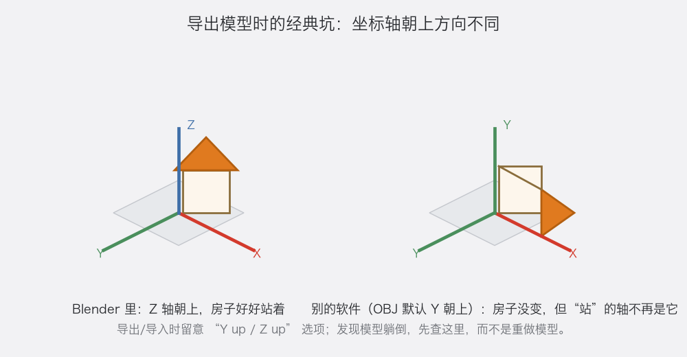
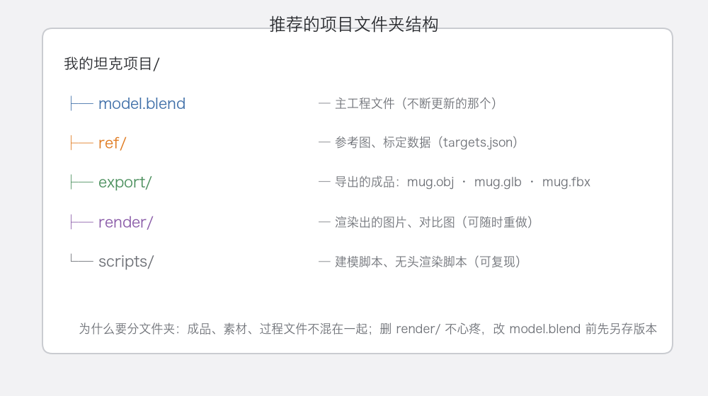
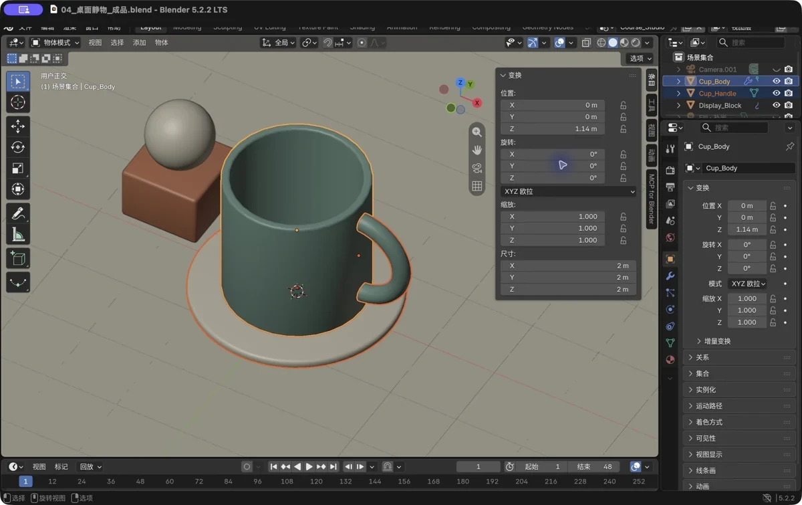
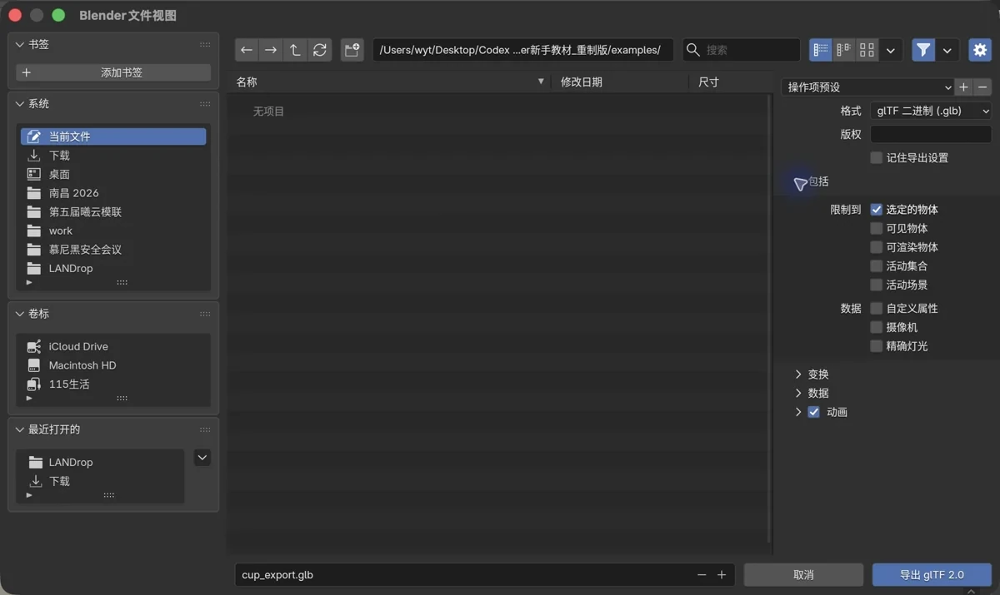

第 9 章 工程管理与导入导出：让作品“出得去、回得来”
场景：模型做得漂漂亮亮，导出给朋友/引擎/打印机——结果在对方软件里躺倒了、缩了 100 倍、颜色全丢了。这一章把这些“最后一公里”的坑一次讲清。
学完你会
这一章解决"最后一公里"的问题。你会认识常用导出格式（OBJ / FBX / GLB / STL）和各自的用途；会破解"模型导出后躺倒 / 巨大 / 消失"这三大经典 bug；最后建立一套从第一天就该有的文件组织和命名习惯——让你几个月后还能找得到、改得动自己的作品。
核心概念 1：导出格式怎么选
| 格式 | 全名 | 用在哪 | 备注 |
|---|---|---|---|
| .obj | Wavefront OBJ | 通用交换（3D 打印切片软件、老软件） | 老牌万能，只有几何+基础材质 |
| .fbx | Autodesk FBX | 游戏引擎（Unity/Unreal）、动画行业 | 带骨骼动画，工业标准之一 |
| .glb / .gltf | glTF | Web 3D、现代应用、AR/VR | “3D 界的 JPEG”，现代首选 |
| .stl | STL | 3D 打印 | 只有形状，无颜色无材质 |
| .blend | Blender 原生 | 你自己继续改 | 全信息打包 |
不用背全表，记住三句话就够用：Web / 现代应用选 GLB；游戏引擎选 FBX（或 GLB）；3D 打印选 STL。 至于 .blend，那是你自己继续干活的工程文件，不是交付格式。
核心概念 2：坐标轴的“躺倒”之谜

图 63 同一个“站着的房子”，在不同软件里可能“躺着”——因为各自的“朝上轴”不一样
先建立几个事实：Blender 的世界里 Z 轴朝上，房子好好站着；而很多别的软件和格式的默认是 Y 轴朝上；导出器一般会自动转换（比如 Blender 导出 glTF 时自动换轴），但老格式 OBJ 的规则比较"随缘"，不同软件对 up 轴的处理各有各的历史包袱。
作战口诀：模型在别的软件里躺倒了 → 不是模型错了，是 up 轴没对上。回去检查导出 / 导入界面的 "Y up / Z up / up axis" 选项，或者在对方软件里把模型旋转 90° 即可，千万别回 Blender 重新做。
核心概念 3：导出前必做——应用变换
导出异常的三大高频元凶（巨大、躺倒、偏移），其实是一个根因：
你在物体模式里用
S缩放了 100 倍、用R转了 90°，这些“变换值”还挂在物体上，没“焊死”进网格。
部分导出器和引擎会忽略这些未应用的变换值，于是尺寸不对（巨大或微小）、方向不对（躺倒或倒立）。修复很简单：选中物体 → Ctrl+A → 全部变换（All Transforms），所有位置 / 旋转 / 缩放值归零并"焊死"进网格，从此怎么导都不歪。
⚠️ Ctrl+A 不可逆（相当于提交）。做之前记得 Ctrl+Shift+S 另存一个版本。
跟着做 1：导出你的马克杯（OBJ 与 GLB 各来一份）
以第 3 章的马克杯为例走一遍完整流程。打开马克杯文件，选中杯子（手柄也一起选：Shift+左键）；先应用变换：Ctrl+A → 全部变换；然后导出 OBJ：文件 → 导出 → Wavefront (.obj)，记得勾选"选择项限定（Selected Only）"——只导出你选的，免得把相机、灯也塞进去，其余保持默认即可；接着导出 GLB：文件 → 导出 → glTF 2.0 (.glb/.gltf)，同样勾"选择项限定"，并确认"几何 → 应用修改器（Apply Modifiers）"是勾上的（如果你还挂着修改器的话）。最后验证：把 .glb 拖进任意支持 glTF 的软件或在线查看器（或者再导回 Blender 新建场景对比），模型应该保持原位、原尺寸——检验过的导出，才算真的导出成功。
跟着做 2：组织一个不会烂尾的项目文件夹

图 64 一个项目 = 五件套：主文件 / 参考 / 导出 / 渲染 / 脚本
现在是整理时间：照着图建一遍你项目的文件夹，把现有文件归位。核心思想一句话——分类存放，各安其位。主工程（.blend）永远只有一个"当下最新版"，历史版本用另存命名（作品A_v3.blend）；导出成品和渲染图随时可删可重做，放进各自的 export/、render/ 文件夹，丢弃无压力；参考图和脚本放进 ref/、scripts/——它们是项目的"证据链"，永久保留。
跟着做 3：命名与集合——场景不乱的前提
先学重命名：选中物体，按 F2 直接打字改名（右键 → 重命名也行）。把"Cube.001、Cube.002"改成"车身、车轮、车门_L1"——将来你会对着大纲视图找东西，这 10 秒钟能省你 10 分钟。再学集合（Collection）：大纲视图里右键 → 新建集合，比如"车体零件""灯光相机"；选中物体按 M → 选目标集合，归类收纳。
⚠️ 注意 M 是个多义键：物体模式下它是"移动到集合（Move to Collection）"；编辑模式下它是"合并顶点（Merge）"。用之前先确认自己在哪个模式——这也是本书反复强调"看清状态"的原因之一。
跟着做 4：交付检查五步（发图前照着过一遍）
把作品发给别人之前，多花五分钟走完这五步——"能打开、没缺件、方向对"，靠的是检查，不是运气。第一步，另存一份交付副本：保留自己可编辑的原工程，导出时挑干净的东西，别把测试灯、隐藏草稿一起交出去。第二步，打包资源：做过贴图的工程，用 文件 → 外部数据 → 自动打包资源，把图片"吃"进 .blend 里——不打包的话，换台电脑贴图全丢（模型在别人那儿变粉红色，多半就是这个原因）。第三步，只选该交的物体再导出：比如只选杯身，导出 GLB 时勾上"选择项限定"。第四步，重新导入验证：新建一个空工程，把导出的文件再导回来，看尺寸、方向、颜色对不对——"导出成功"不等于"对方能正常打开"，这一步才是验收。第五步，留一份说明：告诉对方你用的版本、单位约定和文件清单。

图 65 真实软件截图：只选要交的部分（杯身），灯和相机不选

图 66 真实软件截图：导出 GLB——勾上“选择项限定”，别有东西被落下
新手常见坑
| 坑 | 说明 | 对策 |
|---|---|---|
| 导出后模型巨大/微小（100 倍） | FBX 世界常用“厘米”，Blender 用“米”；或缩放没应用 | 导出设置里调“缩放单位”；Ctrl+A 应用变换 |
| 导出后模型躺倒 | Y-up / Z-up 不一致 | 检查导出/导入的 up 轴选项，或对方软件里转 90° |
| 导出后材质变灰 | OBJ/STL 不带复杂材质；贴图文件路径丢了 | 用 GLB 保材质；贴图用“打包/相对路径”选项 |
| 导出后细节全无 | 修改器没应用也没勾“应用修改器” | 导出设置勾选“应用修改器”；或导出前在修改器面板逐个应用（先 Ctrl+A 应用变换更稳妥） |
| 场景里东西越堆越乱 | 随手添加从不命名 | F2 改名的习惯 + M 归集合 |
| .blend1 占空间想全删 | 它们是备份不是垃圾 | 留最近一两版即可，别全删 |
过关标准
- 我能说出 OBJ / GLB / STL 各适合送给谁、什么场合；
- 我亲手走过一次“导出 → 重新导入”的验证；
- 我的项目有清楚的文件夹和文件名（主文件一眼能找到）。
自检题
- 做 Web 展示、3D 打印、游戏引擎，分别优先导出什么格式？
- 导出的模型在别的软件里“躺倒”了，根因和最省事的解决方向是什么？
- 为什么导出前建议
Ctrl+A→ 全部变换？ - 物体模式下
M和编辑模式下M分别做什么？
答案见文末。
自检题答案
- Web → GLB；3D 打印 → STL；游戏引擎 → FBX 或 GLB。
- 根因是 up 轴（Y-up/Z-up）约定不同；方向：改导出/导入的 up 轴设置，或对方软件里转 90°，不要重做模型。
- 把未“焊死”的位置/旋转/缩放提交进网格，避免导出器忽略变换值导致的尺寸/方向错误。
- 物体模式：移动到集合；编辑模式：合并顶点菜单。
小结
这一章像一个"出关攻略"。格式上记三句话：Web 用 GLB、引擎用 FBX、打印用 STL；遇到模型躺倒，先想 up 轴，而不是怀疑自己的模型；导出前随手 Ctrl+A 应用变换，导出时勾上"选择项限定 + 应用修改器"，最后一公里就不会翻车。
比技术更值钱的是习惯：五件套文件夹（主文件 / 参考 / 导出 / 渲染 / 脚本）让项目有条理，F2 改名和 M 归集合让场景不失控。命名清晰 = 未来的你谢谢现在的你——这句话，等你三个月后回来改自己的老工程时，会格外有感触。